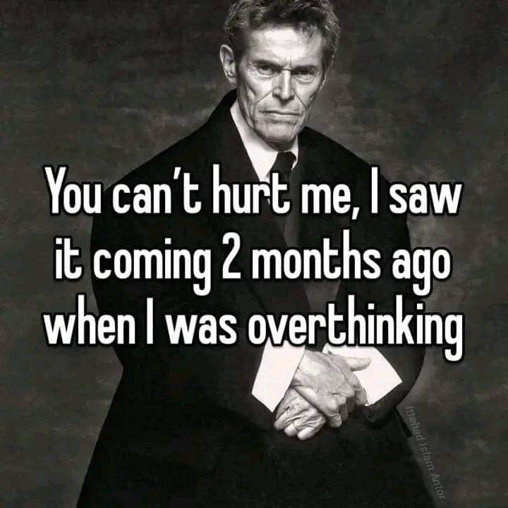
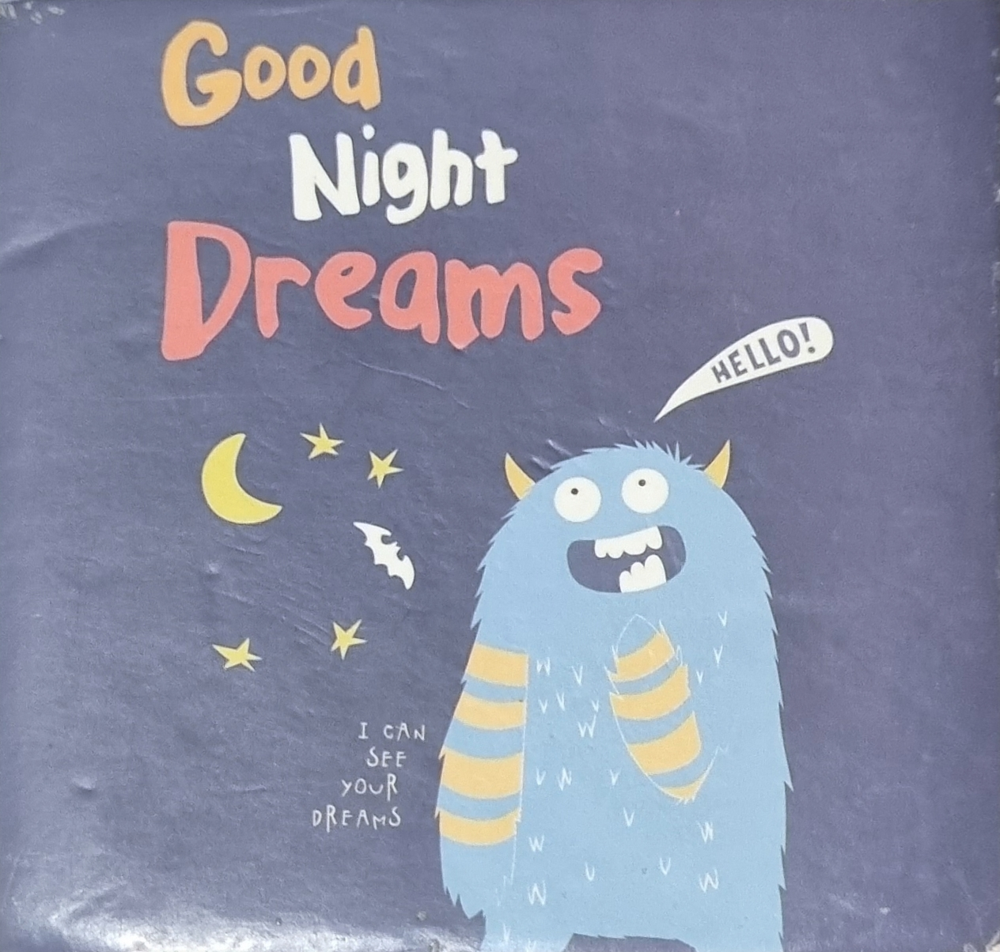

Well well well, hello Sarah 👋 How are you doing? I have good faith that this text finds you in the best of your times. I know you might have many questions as to what lead you here. Believe me so do I, as to what made me write this 😅 This originated on the 21st of November 2023 when I answered some questions I asked myself as to what you might ask after viewing a specific video/reel I upload on my social media Below are a series of Questions and their respective answers to account for all the queries that must be boggling up in your mind, so go ahead grab a cup of whatever is it that you drink and enjoy the read! If you get any question other than the ones prescribed below then please feel to hesitate to reach out 😉
Hmmmm. At first it wasn't going to be this way. This video which lead you here has been in progress with bit by bit shooting whenever I could get a good random shot of people doing everyday task. And as you may know this was hard to do with any of the girls I know. So, I had specifically planned to arrange a shoot with the help of Sania by giving her my camera and some scenarios. As it turned out it wasn't going to be as easy as I thought it would be. Time went on and we kept on PROcastinating until the time I thought that it would be better to leave it out as is since including them would really violate the policies we have at Qordata and I was already breaching many rules as is. Besides this I don't know much people from inside the room, just you and a handful other and I didn't know how others would react to the idea of them being recorded and uploaded to the internet. I hope that you understand and can forgive me along with all of other lacking of personality and character in me 🥺 It is a very strong belief that we shouldn't interact besides work hence doing somthing like this would go completely againts Qordata's culture and what they stand for, which I really respect.
Yes, I am aware of that and I hold your concern in high regard. This is called leverage. I just wanted to show the fun side of Qordata. Many people show their concern that everything is dead here as far as workplace fun and pranks are considered. Hence, this sheds some light on the light side of Qordata.
Ahhhh, yea. I guess its about time isn't it? I won't lie, but I am looking for opportunities presumably remote, so I'm just waiting for the best time and not rushing it. Besides this times have been strict recently as we're rushing for the final quarter. New product ideas, marketing strategies and competing with new companies. I like the fact that our team gets to explore new horizons with freedom and investment from the company. How about you? I'm sure you're good as always, but what else is new? Any new hobbies? A new place you visited? Still working out and cycling?
Affirmative. Of course there's always something to do and less time to prioritize it 😛 Then again its never about having enough time to do stuff its all about priorities. Its not about whether you can do something or not its about if you want to?
The video or this conversation that we're having right now? 😅 I'll let you know for both. Firstly, I have been planning to make this video project for quite sometime now. It wasn't so hard to make this video, but it took longer to shoot random scenarios and acts that people playout in their day to day life at work. And to make sure that what was happening was interesting to watch and curious as well, thats what took longer to shoot, not the video itself. I guess I had written about this idea in my tiny night thougts notebook back in October last year. Secondly, talking about this conversation that we're having right now. You wouldn't believe the amount of private repositories I have and what I have in them 😋 Well, I have a small sleep cycle, so either I'm up early or sleeping late. Sometimes I dare myself to go to sleep super early and be alone with me night thougts. That's when I guess I had these conversations about you and couple other people questioning my work 🙃 I keep a dream notebook at my bedside and write down anything interesting that comes to mind. And I've noticed most of the productive and gripping thougts come to me late night, so I like quite thoughtful nights.
I don't mean to be weird and come across as a freak to you, but I'm sure everyone has these. Like I said, sometimes I dare myself to go to sleep early and be alone with my thoughts. That's why I really do not mind when people are honest with me even if they think it would offend me. I honestly don't mind anything. Two words I would use to describe myself are 'Apathetic' & 'Stoic'. Instead that's how I would like people to be, this way nothing goes on behind you.
Sure, here it is.
Na ah, sorry.
Thanks for the offer, but negative, I do not. Moonh sy dhua or doston ka sath my kabhi nahi chorta 🫡 but we can hang out for drinks if not smoke 😉
Well, you looked like a Dunhil girl to me 😛😄 Just kidding, by now I'm probably dragging myself to sleep 😴😪